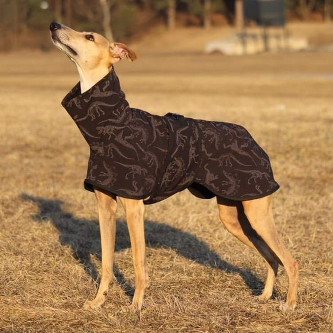
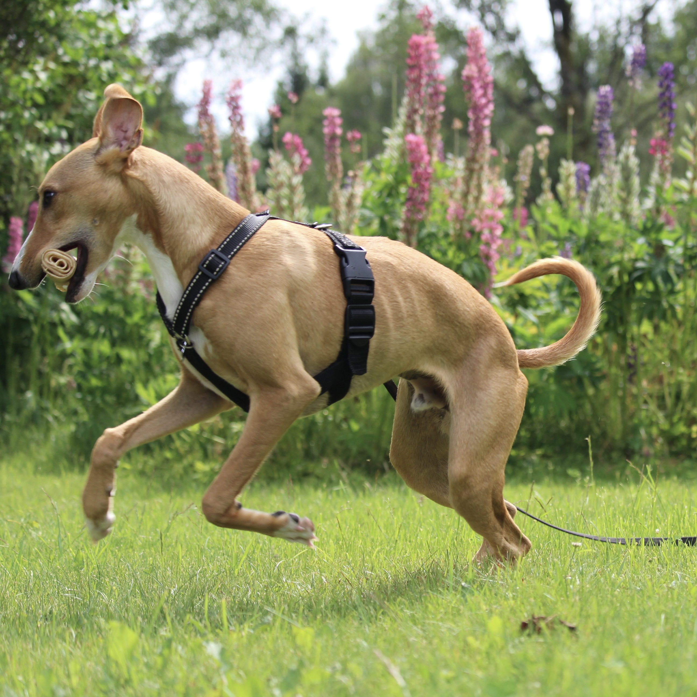
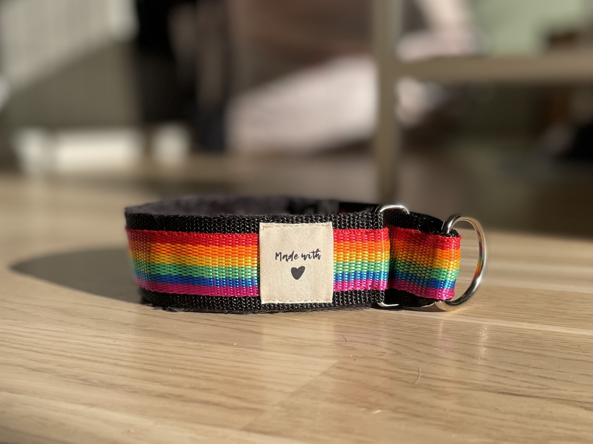
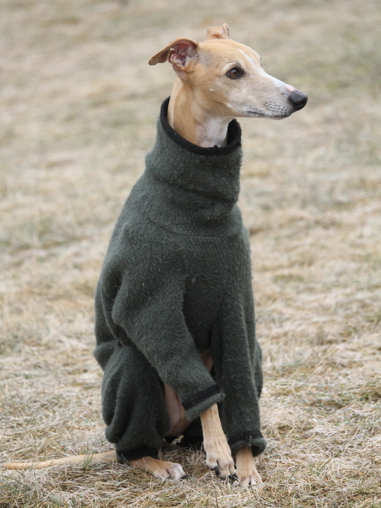

I'm Victoria, and I love sewing for my two whippets. Being a creative person, I find joy in crafting clothes and accessories for my furry companions. Whether it's making cozy sweaters for chilly days or stylish coats for walks in the park, sewing for my dogs is not just a hobby but a way for me to express my creativity while ensuring they're comfortable and fashionable. It's a simple pleasure that brings me closer to my pets and allows me to indulge in my passion for crafting.
 An additional hobby is photography, something that comes in handy when wanting to document my creations.
 Whippets need clothing to keep them warm during the chilly months. Their thin fur isn't always enough to protect them from the cold, so I take it upon myself to ensure they're snug and cozy. Additionally, finding harnesses that fit their unique body shape can be a challenge. Standard sizes often don't accommodate their slender frames and deep chests properly. That's why I've taken to sewing custom harnesses tailored specifically for them. It's a labor of love, knowing that I'm providing them with the warmth and comfort they need while also ensuring their safety and mobility.